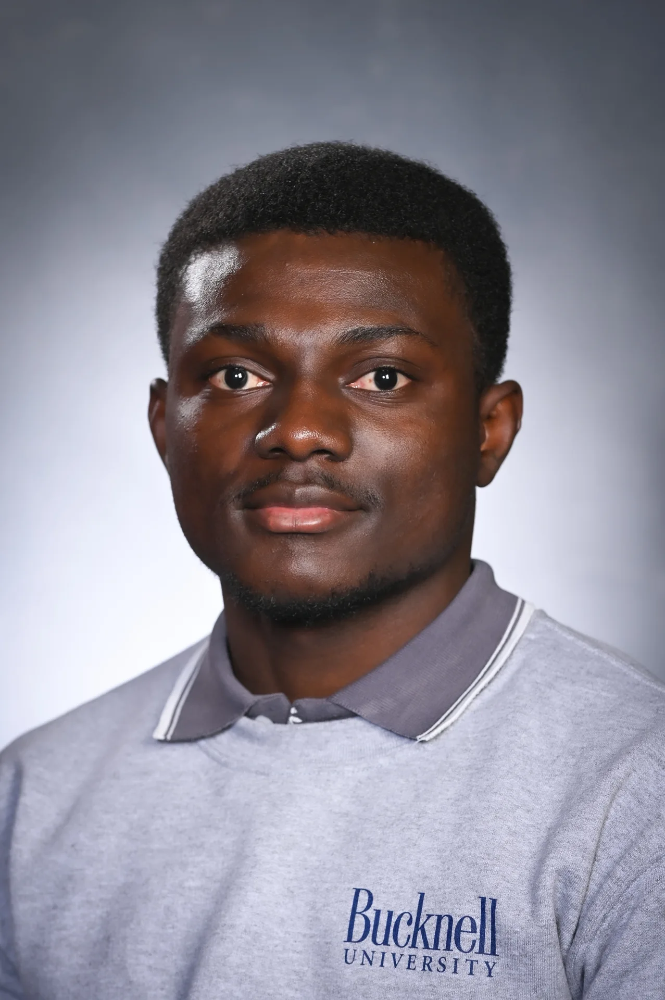

Summer 2026 · Field internship
Automated systems
Safety-sensor calibration, operator programming, and installation support at Thomas V. Giel Garage Doors.
Electrical Engineering student at Bucknell University building sensor-based systems and energy-focused prototypes.
B.S. Electrical Engineering · May 2028 · GPA 3.62/4.00
Lewisburg, Pennsylvania
Internship interests: power systems, renewable energy, and embedded hardware.

Summer 2026 · Field internship
Safety-sensor calibration, operator programming, and installation support at Thomas V. Giel Garage Doors.
Summer 2025 · Research
Numerical modeling of diffusion in porous media, with comparisons against analytical solutions.
Bucknell · Uptown & Weis Center
Joined Uptown in February 2025 and was promoted to Assistant Technical Manager in August 2026, managing student tech staff and attending weekly managerial meetings. Also work as backstage technical staff at the Weis Center.

Coursework · Working prototype
Integrated distance, magnetic, and acceleration sensing on a remote-controlled car to collect distance, heading, pitch, and roll data.
ESP32 / Feather · ThingSpeak · PCB design
View project
Team project · Course prototype
Contributed to a microgrid prototype with motion-based appliance control, solar-generation analysis, and an energy-monitoring app concept.
Energy analysis · Sensors · System integration
View project
In progress · Prototype
Developing a sensor-based system to adjust a photovoltaic panel’s orientation in response to light intensity.
Embedded control · Sensors · Solar energy
View projectCircuit design · KiCad PCB layout · Through-hole and surface-mount soldering · Hardware debugging · Analog Discovery 3
Arduino · Feather microcontrollers · Sensor integration · Python programming · MATLAB · ThingSpeak · APIs and JSON
Solar-generation analysis · Microgrid concepts · Energy monitoring · 3D printing · Laser cutting · Prototype assembly
My interest in engineering has grown through work at different scales: an ultrasonic sensor opening a bin lid, a set of sensors measuring a moving car, and a team exploring energy use across a building. Each project gives me a different way to connect electronics with a practical need.
I’m drawn to energy because it connects technical decisions with everyday life. My background in Ghana and my study abroad experience in Scotland have made me think carefully about the context around a system: who uses it, what resources are available, and what it takes to keep it working. At Bucknell, I’m building the technical foundation to explore those questions through design, testing, and analysis.
The person behind the projects. My background, skills, and interests in electronics and sustainable engineering.
02Design, ethics, energy equity, and the communities our systems serve.
03Embedded systems, a smart sustainable home, solar tracking, and sensor-driven automation.
04Learning about infrastructure and clean energy through study abroad in Scotland.
05Perspectives shaped by Ghana, the United States, Scotland, and life beyond the classroom.
06Reflections on meaningful work and a future at the intersection of engineering and sustainability.